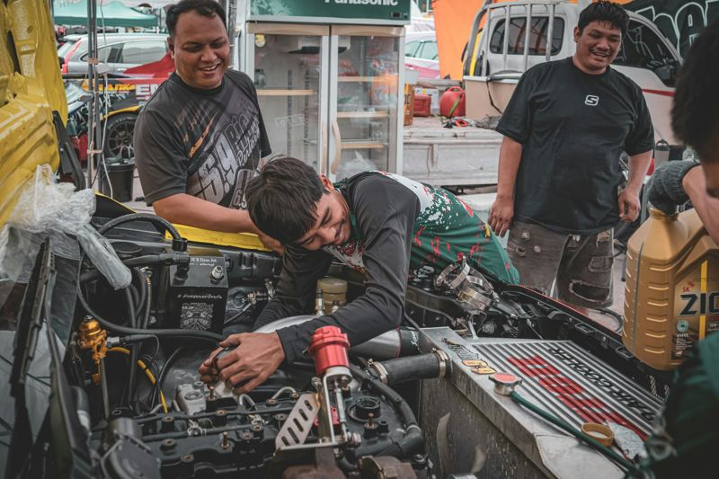

Our Story
Thabo's Auto Electrical was founded to provide fast, accurate, and transparent auto-electrical repair services in our local community. From small passenger cars to commercial fleets, we ensure reliable diagnostics and quality workmanship to keep you safely on the road.

Our Technicians
Our team consists of qualified automotive technicians specialising in electrical troubleshooting, wiring configurations, and computer diagnostics. We continuously update our equipment and knowledge to handle modern vehicle electrical systems safely and efficiently.
Our Mission
To deliver affordable, high-quality, and trustworthy auto-electrical solutions with minimal vehicle downtime for local drivers, taxi operators, and business fleets.
Our Values
- Honest and transparent pricing estimates
- Certified diagnostic and repair standards
- Fast turnaround time to get your vehicle back on the road quickly
- Dedicated customer care and reliable follow-up support